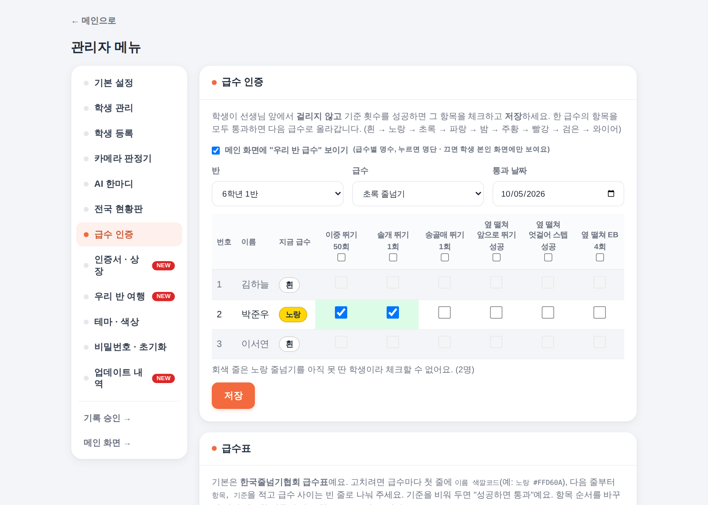
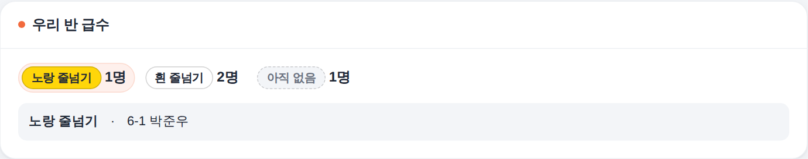
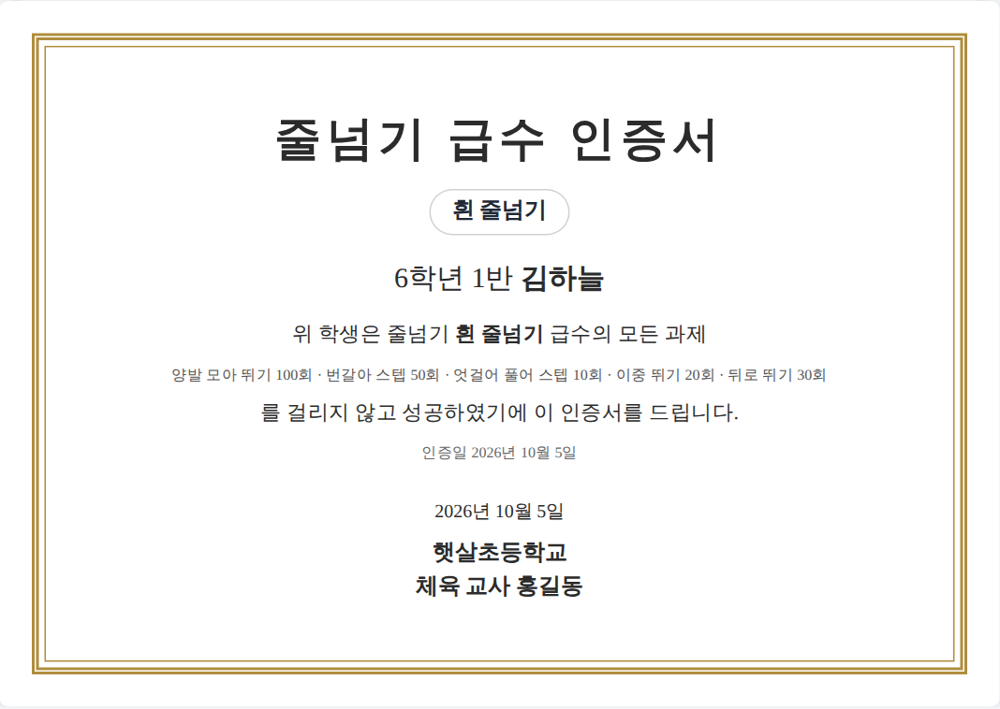
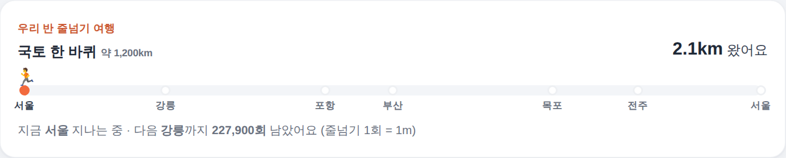

학생은 휴대폰으로 그날 뛴 줄넘기 횟수를 넣고, 반 전체 그래프·학생별 누적·전국 현황판까지 한눈에.
학교 시트에 껍데기(Shell) 하나만 설치하면, 새 기능은 자동으로 들어옵니다.
사용설명서 · 2026년 10월 · Made by 음악적체육인 · https://musicalpe.github.io/jumprope/
차례
꾸러미에 들어 있는 것
처음 설치 (2분, 한 번만)
첫 설정 — 비밀번호 · 학생 등록 · QR
수업에서 쓰기
전국 현황판 · 기록실
급수 인증 · 인증서 · 우리 반 여행 (2.2 새 기능)
1.x 를 쓰던 학교에서 옮기기
업데이트
자주 묻는 질문 · 문제 해결
1. 꾸러미에 들어 있는 것
파일
쓰임
Shell(껍데기).txt
견본 시트를 쓰지 않고 직접 설치할 때(방법 B)나 껍데기를 새 판으로 바꿀 때 Apps Script 에 붙여넣는 코드. 메모장으로 열어 전체 복사하면 됩니다.
사용설명서.pdf
지금 보고 있는 문서
화면과 기능은 인터넷(GitHub)에서 열리기 때문에 따로 내려받을 파일은 이것뿐입니다. 학생·기록·설정은 선생님 구글 드라이브의 스프레드시트에만 저장됩니다.
2. 처음 설치 (2분, 한 번만)
방법 A — 견본 시트 사본 만들기 (추천)
아래 견본 링크를 열고 사본 만들기를 누릅니다. 껍데기 코드가 들어 있는 빈 시트가 선생님 드라이브에 생겨요. 왼쪽 위 파일 이름 줄넘기 기록 관리(견본)의 사본 을 눌러 6학년 1반 줄넘기처럼 우리 반 이름으로 바꿔 주세요.
https://docs.google.com/spreadsheets/d/1ItPU6WU1-buXQ_Cb9yRYjUz81IYXISoq3ul3_ht-4h0/copy 프로그램 연결 화면의 "견본 시트 사본 만들기" 링크로도 열 수 있어요.
사본에서 메뉴 확장 프로그램 → Apps Script → 오른쪽 위 배포 → 새 배포 → 톱니바퀴에서 유형 웹 앱
다음 사용자로 실행: 나
액세스 권한: 모든 사용자
배포 → 권한 허용. "Google에서 확인하지 않은 앱" 경고가 나오면 고급 → (프로젝트 이름)(으)로 이동(안전하지 않음) → 허용.
선생님 드라이브의 시트에서 선생님 계정으로 실행되는 코드라 나오는 안내입니다.
나온 웹 앱 주소(…/exec 로 끝남)를 브라우저로 열면 아래 "설치 확인" 화면이 뜹니다. 프로그램 열기 → 를 누르세요.
열린 프로그램 주소를 즐겨찾기에 넣으면 설치 끝! 관리자 비밀번호는 처음에 1234 입니다.
방법 B — 직접 붙여넣기
구글 드라이브에서 새 스프레드시트를 만들고 확장 프로그램 → Apps Script 를 엽니다.
왼쪽 Code.gs 의 내용을 전부 지우고, Shell(껍데기).txt 내용을 붙여넣은 뒤 저장(Ctrl+S)합니다.
방법 A 의 2~5번과 같이 배포합니다.
웹 앱 주소를 열면 나오는 설치 확인 화면
액세스 권한이 "모든 사용자"가 아니면 학생 휴대폰에서 "학교 시트에 연결하지 못했어요"가 뜹니다. 학생들은 구글 로그인 없이 들어옵니다.
3. 첫 설정 — 비밀번호 · 학생 등록 · QR
메인 화면 오른쪽 위 관리자 메뉴 → 비밀번호 1234 로 들어갑니다.
① 관리자 비밀번호 바꾸기
비밀번호 · 초기화 탭에서 바로 바꿔 주세요.
② 학생 등록 — 엑셀에서 붙여넣기
학생 등록 탭에 엑셀·구글시트의 학년 · 반 · 번호 · 이름 네 칸(다섯째 칸에 학생 비밀번호, 선택)을 복사해 붙여넣고, 아래 미리보기를 확인한 뒤 등록.
학생 비밀번호를 비워 두면 1234 로 등록됩니다. (학생이 자기 기록 페이지를 볼 때 사용)
제목 줄이 섞여 있거나 이미 등록된 학생은 자동으로 건너뜁니다.
학생 등록 — 붙여넣으면 아래 표에서 확인
③ 기본 설정 — QR · 하루 목표 · 줄넘기 종류 · 승인 절차
기본 설정 탭의 학생 접속 QR
학생 접속 QR: 크게 보여주기 / 주소 복사 / 이미지 저장. 프로그램이 새 판이 되어도 QR은 그대로 쓰면 됩니다.
즐겨찾기용 주소(끝이 &qr=1): 교실 컴퓨터에 넣어 두면 열자마자 QR이 크게 뜹니다.
오늘의 목표: "오늘 목표 달성 학생 수" 기준 (기본 100회)
줄넘기 종류: 한 줄에 하나씩 (모아뛰기, 엇갈아뛰기, 이중뛰기 …). 학기 중에는 이름을 바꾸기보다 추가만 하세요.
승인 절차: 켜면 학생 입력 → 선생님 승인 후 반영. 새로 설치하면 기본 켜짐이고, 끄면 저장 즉시 반영됩니다. 전국 현황판에 참여하려면 켜져 있어야 해요.
4. 수업에서 쓰기
학생
QR을 찍어 들어옵니다.
학년 → 반 → 이름 → 줄넘기 종류를 고르고 뛴 횟수를 넣고 저장.
여러 번 뛰었으면 그때마다 넣으면 그날 횟수가 모두 더해집니다.
그래프의 자기 이름 막대를 누르고 비밀번호를 넣으면 날짜별 기록을 볼 수 있어요.
선생님
메인 화면: 이번주·오늘의 줄넘기왕, 연속 기록 1위(공동 1위는 모두 표시), 학생별 누적 그래프(종류별로 쌓아서 / 한 종류만)
기록 승인: 누르는 즉시 반영, 여러 건은 모두 승인 버튼으로 한 번에
학생 관리 탭: 학생별 기록 고치기·삭제, 명단 순서 바꾸기
테마 · 색상, AI 한마디(Gemini 키를 넣으면 매일 새 응원 문구)
학생 휴대폰 입력 화면
메인 화면 (교실 TV에 띄워 두기 좋아요)
📷 카메라 판정기 (선택)
카메라 판정기 탭에서 켜면 입력 폼에 📷 카메라로 뛰기 버튼이 생깁니다. 태블릿·노트북·휴대폰 카메라가 실제로 뛴 횟수를 세고, "끝내고 기록하기"를 누르면 자동으로 기록됩니다. 카메라 기록은 📷 표시가 붙고, 전국 현황판에서도 "카메라 인증" 횟수로 따로 보여요. 카메라가 센 기록은 승인 없이 바로 반영됩니다(설정에서 승인 대기로 바꿀 수 있음).
5. 전국 현황판 · 기록실
참여를 켜면 우리 학교 기록이 전국 현황판에 모여 다른 학교와 한 달 단위로 순위를 겨룹니다. 매달 1일에 새로 시작하고, 지난 달 1~3등은 기록실에 남습니다(최근 12개월). 참여는 기본 꺼짐이에요.
켜는 방법
관리자 메뉴 → 전국 현황판 탭
전국 현황판에 참여하기 체크 → 학교 이름·담당 교사 입력(필수), 연락처는 선택
현황판에 학교 이름을 보이게 하려면 현황판에 학교 이름 공개도 체크 (끄면 "익명 학교 ABCD")
승인 절차가 꺼져 있으면 참여를 켤 때 함께 켜집니다. 현황판에는 선생님이 승인한 기록과 카메라 기록만 올라가요.
저장 → 이번 달·지난 달 기록이 바로 보내지고, 아래에 "현황판에 보이는 모습"이 나옵니다.
관리자 메뉴 → 전국 현황판 탭
무엇이 보내지나요?
현황판에 보내는 것
운영자만 보는 것
보내지 않는 것
가린 이름(예: 김*늘) · 학년 · 날짜별 뛴 횟수 · 카메라 인증 횟수 · 등록 학생 수 · (공개를 켰을 때만) 학교 이름
학교 이름 · 담당 교사 · 연락처 (문의·장난 보고 확인용, 현황판에는 안 나옴)
학생 실명 · 반 · 번호 · 비밀번호 · 그 밖의 학교 시트 내용
같은 학교의 여러 반이 각자 참여하면 현황판에 한 줄씩 따로 보여요. 학교 이름에 반을 붙여 주세요(예: 햇살초 6-1). 반마다 견본 사본(또는 새 스프레드시트)에 따로 설치하고, 다른 반이 쓰던 시트를 복사하지 마세요. 복사한 시트는 프로그램이 알아채고 "새 참여 번호로 바꾸기"를 안내해요.
참여 중에 승인 절차를 끄면 전국 현황판 참여도 함께 꺼집니다(현황판의 우리 학교 기록 삭제).
승인 화면에서 승인한 기록은 바로 현황판에도 반영됩니다.
담당 교사·연락처는 학교 시트에 남기지 않고 그 관리자 기기에만 기억합니다. 다른 기기에서 관리할 때는 다시 넣어 주세요.
참여를 끄면 현황판에 올라간 우리 학교 기록은 지워집니다.
학생이 기록을 저장할 때마다 오늘 집계가 보내지고, 관리자 메뉴를 열면 이번 달·지난 달 전체를 한 번 더 맞춥니다(늦게 넣은 기록·승인 반영).
현황판 보기
참여 중이면 메인 화면 위에 🏆 전국 현황판 버튼이 생깁니다. 우리 학교 줄이 색으로 표시되고, 학교 줄을 누르면 그 학교 안 학생 순위가 펼쳐집니다.
합계 순위와 함께 1인당 평균(합계 ÷ 등록 학생 수)·참여율(한 번이라도 뛴 학생 ÷ 등록 학생 수) 순위로 바꿔 볼 수 있어 작은 학교도 공정하게 겨룹니다. (두 순위는 등록 학생 5명 이상 학교만)
전국 학생 순위 TOP 30, 지난 달 현황판도 고를 수 있어요.
학년 고르기로 학년별 순위를 볼 수 있어요. 맨 위의 모두 함께 지구 한 바퀴는 참여한 모든 학교가 이번 학년도에 뛴 줄넘기를 1회 = 1m로 더한 거리예요. 학년도마다(3월 1일) 새로 시작하고, 지난 학년도에 함께 뛴 거리도 아래에 보여요.
전국 현황판
기록실 보기
현황판 위 🏅 기록실 버튼을 누르면 지난 달 학교·학생 1~3등이 나옵니다. 주황 배너의 달 고르기에서 최근 12개월 중 원하는 달을 고를 수 있어요. 학교별 1~3등도 펼쳐 볼 수 있습니다.
기록실 — 최근 12개월 중 달을 골라 1~3등 보기
6. 급수 인증 · 인증서 · 우리 반 여행 2.2 새 기능
급수 인증은 학교 껍데기 3판이 필요해요. 이 꾸러미의 Shell(껍데기).txt 가 3판입니다. 이미 쓰고 계시면 Code.gs 에 통째로 다시 붙여 넣고 배포 → 배포 관리 → 수정(연필) → 새 버전으로 배포하세요(주소·학생·기록 그대로). 인증서의 전국 현황판 상장과 우리 반 여행은 껍데기와 상관없이 쓸 수 있어요.
급수 인증 (교사 인증)
기본은 한국줄넘기협회 급수표예요: 흰 → 노랑 → 초록 → 파랑 → 밤 → 주황 → 빨강 → 검은 → 와이어. 학생이 선생님 앞에서 걸리지 않고 기준 횟수를 성공하면 선생님이 체크합니다.
관리자 메뉴 → 급수 인증 탭 → 반과 급수를 고릅니다. (반에서 가장 많이 도전 중인 급수가 먼저 골라져 있어요)
통과한 항목을 체크하고 저장. 칸 위의 체크칸을 누르면 그 항목을 반 전체에 한 번에 체크합니다.
한 급수의 항목을 모두 통과하면 다음 급수로 올라가고, "급수가 오른 학생"이 안내됩니다. 앞 급수를 아직 못 딴 학생은 회색으로 잠겨요.

급수 인증 — 노랑 줄넘기를 딴 학생만 초록 줄넘기 체크 가능
급수표 고치기: 같은 탭 아래 "급수표"에서 학교에 맞게 항목·기준을 바꿀 수 있어요. 언제든 협회 기준표로 되돌릴 수 있습니다.
학생 화면: 지금 급수와 다음 도전 항목(통과한 항목은 ✔)이 보여요.
메인 화면: "우리 반 급수"에 급수별 명수가 나오고, 누르면 명단이 펼쳐져요. 보이기 싫으면 급수 인증 탭 맨 위 체크를 끄세요.

메인 화면의 우리 반 급수 (누르면 명단)
인증서 · 상장 출력
관리자 메뉴 → 인증서 · 상장 탭에서 종류를 고르고 미리 보기 → 인쇄 · PDF 저장. A4 가로로 한 장씩 나옵니다.
급수 인증서: 반을 고르면 급수를 딴 학생마다 지금 급수 인증서 한 장씩
전국 현황판 순위 상장: 기록실 달을 고르면 우리 학교의 전국 순위, 학생 전국 1~3등, 우리 학교 안 1~3등 상장 (현황판에는 가린 이름만 있지만 상장에는 학교 안에서 찾은 실명이 들어가요)
학교 이름·선생님 이름·주는 날짜를 넣고, 직함은 담임 / 체육 교사 / 직접 입력 중에서 고릅니다.

급수 인증서
우리 반 줄넘기 여행
관리자 메뉴 → 우리 반 여행 탭에서 코스를 고르고 "메인 화면에 보이기"를 켜면, 우리 반이 뛴 줄넘기를 1회 = 1m로 바꿔 메인 화면에 진행 막대가 나와요. 코스는 서울 → 부산(약 400km), 국토 한 바퀴(약 1,200km), 서울 → 제주(약 560km), 지구 한 바퀴(40,075km). 지금부터 새로 출발을 누르면 기록은 그대로 두고 여행만 처음부터 다시 시작해요.

메인 화면의 우리 반 줄넘기 여행
7. 1.x 를 쓰던 학교에서 옮기기
학생과 기록은 같은 스프레드시트에 그대로 남습니다.
Apps Script 에서 Code.gs 내용을 Shell(껍데기).txt 내용으로 바꿔 붙여넣습니다.
Index, StudentPage, AdminPage, ApprovalPage, AdminLogin, Styles HTML 파일은 삭제해도 됩니다.
배포 → 배포 관리 → 수정(연필) → 버전: 새 버전 → 배포 (주소가 그대로 유지됩니다)
웹 앱 주소를 열고 프로그램 열기 → 즐겨찾기. 학생 QR은 관리자 메뉴의 새 QR로 한 번만 다시 알려 주세요.
이미 기록이 있는 학교는 승인 절차가 꺼진 상태로 이어집니다. 예전처럼 승인 후 반영하려면 기본 설정에서 켜세요. (전국 현황판에 참여하면 자동으로 켜져요)
8. 업데이트
화면·기능: 자동. 할 일이 없습니다. 바뀐 내용은 관리자 메뉴 → 업데이트 내역(NEW 표시)에서 볼 수 있어요.
껍데기(Shell): 거의 바뀌지 않습니다. 바꿔야 할 때는 업데이트 내역 탭에 안내가 뜹니다. 지금 껍데기는 3판이에요(급수 인증, 학생 삭제 시 기록도 함께 삭제). 급수 인증을 쓰지 않으면 예전 껍데기 그대로 써도 됩니다.
새 기능을 미리 써 보려면 설치 확인 화면의 베타 열기를 이용하세요.
9. 자주 묻는 질문 · 문제 해결
증상
해결
"학교 시트에 연결하지 못했어요"
배포의 액세스 권한이 모든 사용자인지 확인 → 아니면 배포 관리에서 수정 후 새 버전으로 배포
관리자 비밀번호를 잊었어요
Apps Script 편집기 맨 아래에 function 비번초기화(){ setAdminPassword('1234'); } 를 붙여넣고 저장 → 위쪽 함수 목록에서 비번초기화를 골라 실행 → 비밀번호가 1234 로 돌아갑니다. 끝나면 붙여넣은 줄은 지워 주세요.
학생이 이름을 못 찾아요
학생 관리 탭에서 학년·반 값이 숫자로 똑같이 들어갔는지 확인 (예: 6 과 6학년 이 섞이면 따로 보임)
학기를 새로 시작하고 싶어요
비밀번호 · 초기화 탭 → 모든 기록 삭제 (명단은 남음). 미리 "파일 → 버전 기록"으로 백업하세요.
전국 현황판에 우리 학교가 안 보여요
참여 체크 후 저장했는지, 이번 달 기록이 있는지 확인 → 전국 현황판 탭의 지금 보내기. 현황판은 몇 분 단위로 새로 고쳐집니다.
급수 인증 탭에 "껍데기 3판이 필요해요"가 떠요
Shell(껍데기).txt 를 Code.gs 에 다시 붙여 넣고 배포 관리 → 수정 → 새 버전으로 배포 (주소·학생·기록 그대로)
학교 이름을 숨기고 싶어요
전국 현황판 탭에서 "학교 이름 공개"를 끄고 저장 → "익명 학교 ABCD" 로 표시
줄넘기 기록 관리 v2.2.0 · Made by 음악적체육인 · 문의는 인디스쿨 글 댓글로 남겨 주세요